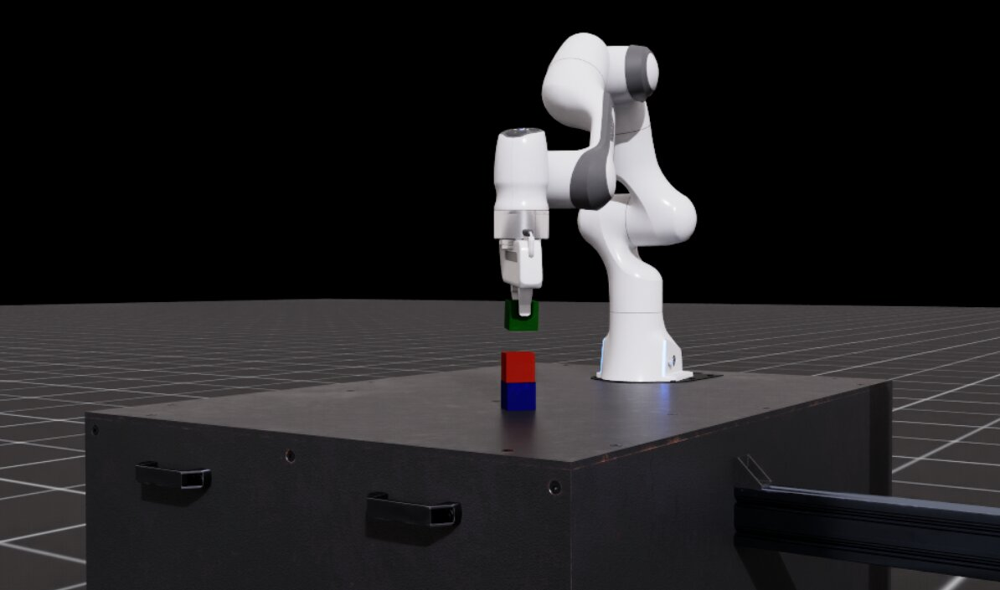
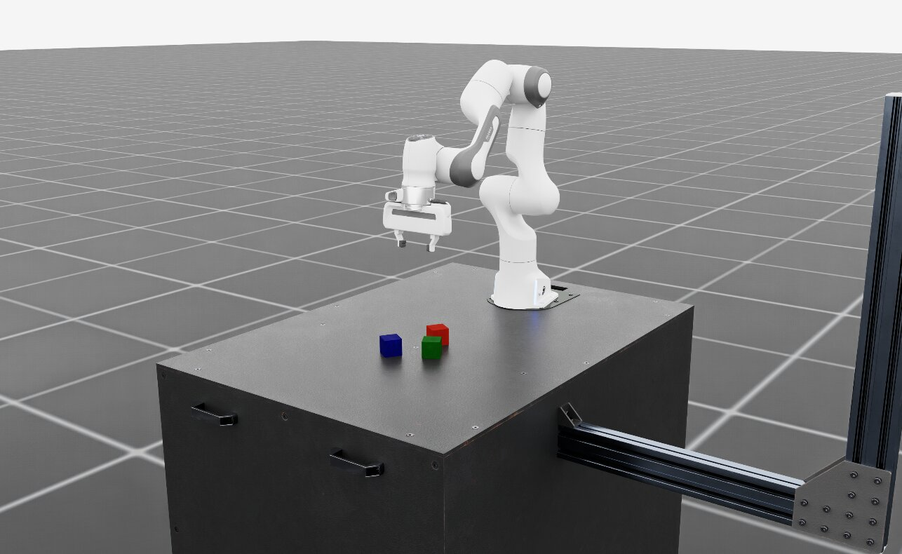
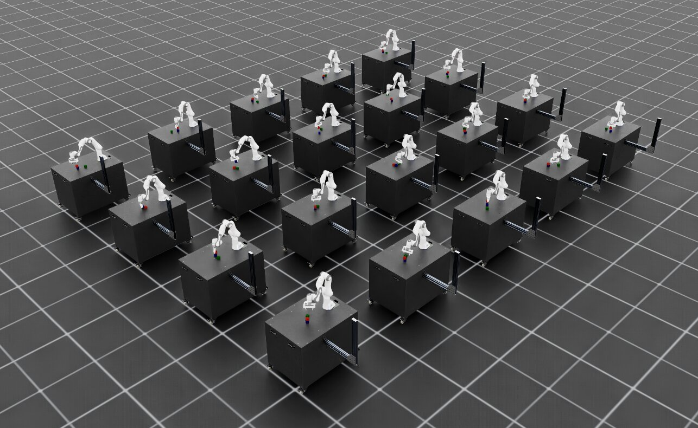
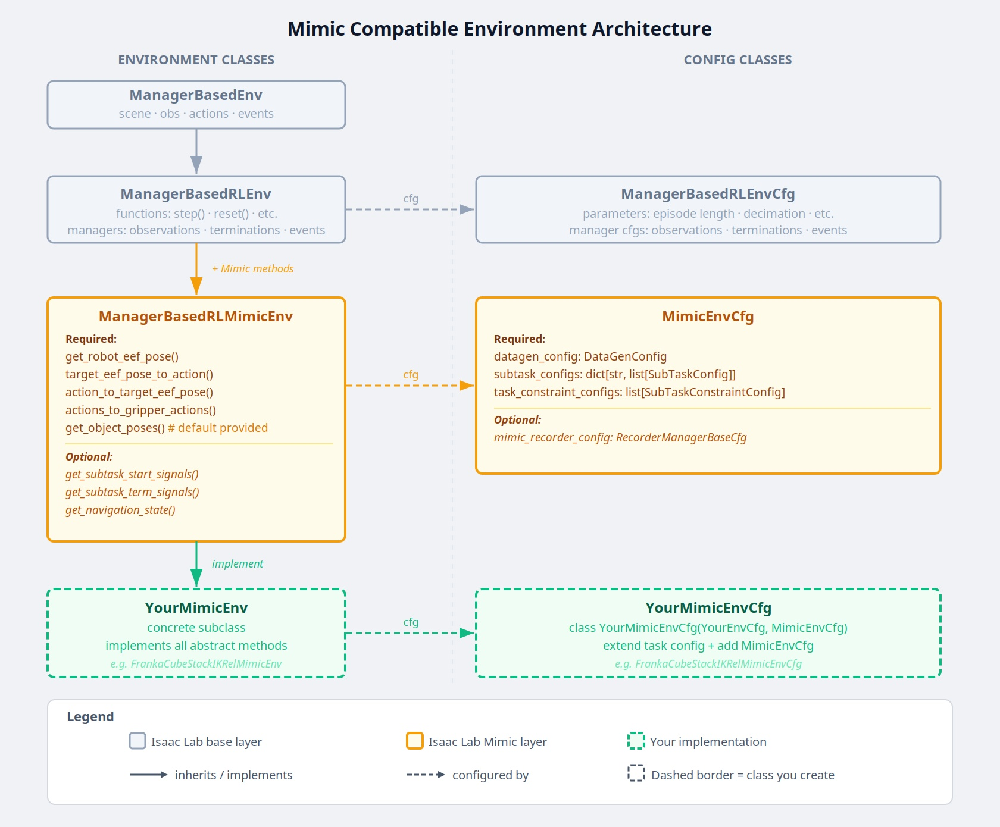

使用 Isaac Lab Mimic 进行合成数据生成与模仿学习#
重要
Isaac Lab Mimic 仅支持 Linux。
什么是 Isaac Lab Mimic？#


Isaac Lab Mimic（Mimic）是一种轨迹数据生成工具，通过生成新的合成数据来扩充人类示范。给定一组人类示范，Mimic 可以自动生成任务相同、空间配置不同的新示范。即使只有少量手动示范，生成的数据也能用于训练更能适应空间变化的模仿学习策略。
Mimic 将每条人类示范拆分为一系列子任务。子任务按决定机器人末端执行器（eef）运动的参考物体定义：每个子任务都是示范中的连续片段，期间末端运动由单个参考物体决定。参考物体变化时，新的子任务开始。标注用于指出示范中各子任务完成的位置。
数据生成时，Mimic 使用人类示范的子任务片段，对机器人动作施加刚体变换，得到任务相同、空间配置不同的新示范。系统会评估新示范是否成功，成功的示范会加入输出数据集。
Mimic 兼容多种机器人形态，包括单末端执行器（如机械臂）和多末端执行器（如人形机器人）。刚体变换要求机器人的动作空间定义在 任务空间 中。如果动作定义在关节空间中，必须通过正向运动学将其转换到任务空间。
以下各节将介绍如何为 Franka 机器人堆叠任务采集少量人类示范，使用 Isaac Lab Mimic 生成新的合成数据扩充数据集，最后训练执行堆叠任务的策略。
步骤 1：采集人类示范数据#
备注
如果不想自行采集示范，可以跳过此步骤，直接进入 步骤 2：使用 Isaac Lab Mimic 生成合成数据 。
环境介绍#
本教程使用 IsaacContrib-Stack-Cube-Franka-IK-Rel 环境及其变体。场景中有一台固定在桌上的 Franka 机器人及三个立方体。任务是按以下顺序堆叠：蓝色在底部、红色在中间、绿色在顶部。教程后续会使用观测空间不同的环境变体，如基于状态的观测、视觉运动观测等。
运行以下命令，通过 Isaac Lab 提供的 zero_agent.py 脚本启动环境并显示场景。脚本在循环中创建环境，以全零张量动作推进仿真，运行时机器人会保持不动。滚动鼠标滚轮可缩放场景；按住 Alt 键并点击拖动，可调整场景视图。
uv run python scripts/environments/zero_agent.py \
--task IsaacContrib-Stack-Cube-Franka-IK-Rel \
--viz kit \
--num_envs 1
接下来，使用 random_agent.py 启动环境并执行随机动作。脚本在循环中创建环境，以随机张量动作推进仿真，可以看到机器人向随机方向移动。
uv run python scripts/environments/random_agent.py \
--task IsaacContrib-Stack-Cube-Franka-IK-Rel \
--viz kit \
--num_envs 1


Franka 立方体堆叠环境#
遥操作#
Isaac Lab 支持通过键盘、SpaceMouse 和 XR 头显等多种输入设备遥操作机器人。
运行以下命令启动环境，通过键盘遥操作机器人。先熟悉控制方式，再尝试堆叠任务。立方体顺序应为蓝色在底部、红色在中间、绿色在顶部。操作熟练后，可按 Ctrl+C 退出脚本，关闭环境。
uv run --extra teleop,isaacsim isaaclab teleop run \
--task IsaacContrib-Stack-Cube-Franka-IK-Rel \
--viz kit \
--num_envs 1 \
--sensitivity 4 \
--teleop_device keyboard
脚本会打印按键帮助。键盘的按键绑定如下：
Keyboard Controller for SE(3): Se3Keyboard
Reset all commands: R
Toggle gripper (open/close): K
Move arm along x-axis: W/S
Move arm along y-axis: A/D
Move arm along z-axis: Q/E
Rotate arm along x-axis: Z/X
Rotate arm along y-axis: T/G
Rotate arm along z-axis: C/V
建议使用 SpaceMouse 获得更平滑的操作，并同时控制多个轴。平滑的示范更容易被策略模仿。Isaac Lab 支持 3Dconnexion SpaceMouse Compact 和 SpaceMouse Wireless 。使用时只需相应修改 --teleop_device ：
uv run --extra teleop,isaacsim isaaclab teleop run \
--task IsaacContrib-Stack-Cube-Franka-IK-Rel \
--viz kit \
--num_envs 1 \
--sensitivity 4 \
--teleop_device spacemouse
脚本会打印按键帮助。SpaceMouse 的按键绑定如下：
SpaceMouse Controller for SE(3): Se3SpaceMouse
Reset all commands: Right click
Toggle gripper (open/close): Click the left button on the SpaceMouse
Move arm along x/y-axis: Tilt the SpaceMouse
Move arm along z-axis: Push or pull the SpaceMouse
Rotate arm: Twist the SpaceMouse
小技巧
如果检测不到 SpaceMouse，通常是用户权限不足。Isaac Lab 安装的 hidapi wheel 附带通过 libusb 与设备通信的后端，因此需要对 /dev/bus/usb 下的 USB 节点具有读写权限。仅授予 /dev/hidraw* 权限 并不够 ；没有 USB 访问权限时，设备虽能被枚举，但没有产品名称。
为 3Dconnexion 厂商 ID 安装 udev 规则，授予权限：
sudo groupadd -f plugdev && sudo usermod -aG plugdev "$USER"
sudo tee /etc/udev/rules.d/99-spacemouse.rules <<'EOF'
SUBSYSTEM=="usb", ATTR{idVendor}=="256f", TAG+="uaccess", GROUP="plugdev", MODE="0660"
KERNEL=="hidraw*", ATTRS{idVendor}=="256f", TAG+="uaccess", GROUP="plugdev", MODE="0660"
EOF
sudo udevadm control --reload-rules && sudo udevadm trigger
然后拔下并重新连接 SpaceMouse，注销后重新登录，使新的用户组成员资格生效。该规则仅授权本地会话用户（ uaccess ）及 plugdev 成员，而非机器上的所有账户。通过 SSH 使用时没有本地会话，正是 plugdev 成员资格提供了访问权限。SpaceNavigator for Notebooks 等较旧的 3Dconnexion 型号使用 Logitech 厂商 ID，请将 256f 改为 046d 。
使用 SpaceMouse 时建议在本地部署 Isaac Lab。如果使用容器部署（ 在 Docker 中运行 Isaac Lab ），必须在 docker-compose.yaml 中挂载 USB 总线，并通过设备 cgroup 规则允许 isaac-lab-base 容器访问：
volumes:
- /dev/bus/usb:/dev/bus/usb
device_cgroup_rules:
- "c 189:* rmw"
Isaac Lab 支持 3Dconnexion 的 SpaceMouse Compact、SpaceMouse Wireless 和 SpaceNavigator for Notebooks。SE(3) 遥操作还支持 SpaceNavigator 及 3Dconnexion Universal Receiver。
（可选）使用 XR 头显遥操作#
对于适合采用手部跟踪扩展现实（XR）设备的任务，Isaac Lab 支持通过 Isaac Capture 与 NVIDIA CloudXR，将场景以沉浸式方式串流到兼容 XR 设备上进行遥操作。
请按 配置 Isaac Capture 与 CloudXR 安装 Isaac Capture 并配置 CloudXR 遥操作。配置完成后，可用以下命令启动立方体堆叠环境，通过 XR 头显尝试操作。使用手部跟踪时，建议选择任务的绝对动作空间变体（ IsaacContrib-Stack-Cube-Franka-IK-Abs ）：
uv run --extra teleop,isaacsim isaaclab teleop run \
--task IsaacContrib-Stack-Cube-Franka-IK-Abs \
--viz kit \
--xr
小技巧
Isaac Lab 遥操作框架的完整介绍，见 Isaac Capture 。支持的 XR 设备列表见 支持的设备 ，添加新设备的方法见 添加新设备 。
采集人类示范数据集#
在 IsaacLab 根目录中新建文件夹存放数据集：
mkdir -p datasets
运行示范录制脚本，为立方体堆叠任务采集 10 条人类示范。选择与输入设备对应的选项卡：
uv run --extra teleop,isaacsim isaaclab teleop record \
--task IsaacContrib-Stack-Cube-Franka-IK-Rel \
--viz kit \
--dataset_file ./datasets/dataset.hdf5 \
--num_demos 10 \
--teleop_device keyboard
uv run --extra teleop,isaacsim isaaclab teleop record \
--task IsaacContrib-Stack-Cube-Franka-IK-Rel \
--viz kit \
--dataset_file ./datasets/dataset.hdf5 \
--num_demos 10 \
--teleop_device spacemouse
通过 XR 头显进行手部跟踪时，使用任务的绝对动作空间变体，并省略 --teleop_device 。 --xr 标志会自动激活 Isaac Capture 流水线。
uv run --extra teleop,isaacsim isaaclab teleop record \
--task IsaacContrib-Stack-Cube-Franka-IK-Abs \
--viz kit \
--dataset_file ./datasets/dataset.hdf5 \
--num_demos 10 \
--xr
备注
运行前，确保 CloudXR 已配置、头显已连接。配置方法见 配置 Isaac Capture 与 CloudXR 。
重要
堆叠立方体的顺序应为蓝色（底部）、红色（中间）、绿色（顶部）。
采集高质量示范的建议：
保持演示简短。简短的演示意味着策略需要做出的决策更少，从而使训练变得更容易。
沿直接路径高效移动到目标。
避免长时间停顿，尽量保持平滑、连续的运动。策略很难判断何时以及为何应停顿，因此连续运动更易学习。
如果示范中出现操作失误，键盘用户可按 R ，SpaceMouse 用户可按右侧按钮，丢弃当前示范并重置到新的起始位置。
您可以通过运行以下命令重现收集的演示:
uv run --extra teleop,isaacsim isaaclab teleop replay \
--task IsaacContrib-Stack-Cube-Franka-IK-Rel \
--viz kit \
--num_envs 1 \
--reset_sim_buffer_each_episode \
--dataset_file ./datasets/dataset.hdf5
采集 10 条成功示范后，再进入下一步。
步骤 2：使用 Isaac Lab Mimic 生成合成数据#
（可选）下载预录制的人类示范#
我们提供了一个预先录制的 HDF5 数据集，包含 10 条人工完成立方体堆叠任务的演示：立方体堆叠人工演示数据集。如果跳过了 步骤 1：采集人工演示 ，可以下载该数据集，继续后面的教程步骤。
将数据集放到 IsaacLab/datasets 文件夹。如果跳过了步骤 1，且尚未创建该文件夹，请先创建。
生成更多合成示范#
以下示例介绍如何通过 Isaac Lab Mimic 生成额外示范，训练基于状态的策略（使用 Isaac-Stack-Cube-Franka-IK-Rel-Mimic-v0 环境）或视觉运动策略（使用 Isaac-Stack-Cube-Franka-IK-Rel-Visuomotor-Mimic-v0 环境），让 Franka 机器人学会堆叠立方体。
生成额外示范前，必须先标注人类示范，确定各子任务的边界。子任务分别针对每个末端执行器（eef）定义，是末端相对于特定物体执行动作的示范片段。末端的目标物体每次变化，都会开始新的子任务。例如，堆叠任务的第一个子任务是抓取红色立方体（末端运动由红色立方体决定），第二个是将红色立方体堆到蓝色立方体上（末端运动由蓝色立方体决定）。可以手动标注，也可以在环境支持时通过启发式规则自动标注。本教程环境支持自动标注，下一步将采用这种方式。
重要
以下各节中的所有命令必须保持一致的策略类型。例如，如果选择使用基于状态的策略，那么所有使用的命令都应来自 "基于状态的策略" 选项卡。
标注录制数据中的子任务：
uv run --extra isaacsim,mimic python scripts/imitation_learning/isaaclab_mimic/annotate_demos.py \
--task Isaac-Stack-Cube-Franka-IK-Rel-Mimic-v0 \
--viz kit \
--auto \
--input_file ./datasets/dataset.hdf5 \
--output_file ./datasets/annotated_dataset.hdf5
uv run --extra isaacsim,mimic python scripts/imitation_learning/isaaclab_mimic/annotate_demos.py \
--task Isaac-Stack-Cube-Franka-IK-Rel-Visuomotor-Mimic-v0 \
--viz kit \
--auto \
--input_file ./datasets/dataset.hdf5 \
--output_file ./datasets/annotated_dataset.hdf5
接下来，使用 Isaac Lab Mimic 生成更多示范：
uv run --extra isaacsim,mimic python scripts/imitation_learning/isaaclab_mimic/generate_dataset.py \
--viz kit \
--num_envs 20 \
--generation_num_trials 10 \
--input_file ./datasets/annotated_dataset.hdf5 \
--output_file ./datasets/generated_dataset_small.hdf5
uv run --extra isaacsim,mimic python scripts/imitation_learning/isaaclab_mimic/generate_dataset.py \
--viz kit \
--num_envs 20 \
--generation_num_trials 10 \
--input_file ./datasets/annotated_dataset.hdf5 \
--output_file ./datasets/generated_dataset_small.hdf5
小技巧
annotate_demos.py 的 output_file 是 generate_dataset.py 的 input_file。


Franka 立方体堆叠任务的并行数据生成#
检查生成的数据（ generated_dataset_small.hdf5 ），确认满意后生成完整数据集：
uv run --extra isaacsim,mimic python scripts/imitation_learning/isaaclab_mimic/generate_dataset.py \
--num_envs 1000 \
--generation_num_trials 1000 \
--input_file ./datasets/annotated_dataset.hdf5 \
--output_file ./datasets/generated_dataset.hdf5
uv run --extra isaacsim,mimic python scripts/imitation_learning/isaaclab_mimic/generate_dataset.py \
--num_envs 300 \
--generation_num_trials 1000 \
--input_file ./datasets/annotated_dataset.hdf5 \
--output_file ./datasets/generated_dataset.hdf5
可按策略需要调整示范数量 --generation_num_trials 。对于成功率很低的任务，可用 --max_num_failures 在失败达到指定次数后停止。未设置此选项时，生成会持续到获得所需数量的成功示范为止。本教程的 BC RNN 策略使用 1000 条示范已能取得较好的训练效果。
可通过 --num_envs 调整环境数量，从而改变数据生成速度。建议值基于 RTX PRO 6000 Blackwell GPU；使用其他 GPU 时，可能需要按显存容量调整环境数。
备注
预计数据生成成功率与耗时
数据生成成功率：基于状态和视觉运动两种情况均约为 40%。
数据生成耗时：基于状态约 15 分钟，视觉运动约 1 小时。
以上数据基于 RTX PRO 6000 Blackwell GPU 和所提供的命令。
步骤 3：训练策略#
安装 Robomimic#
本步骤使用 Robomimic 训练行为克隆（BC）RNN 智能体，利用上一步生成的合成数据学习立方体堆叠策略。
使用以下命令安装 Robomimic 框架：
# install the dependencies
sudo apt install cmake build-essential
# resolve and verify Robomimic in the uv-managed environment
uv run --extra mimic python -c "import robomimic"
旧版环境可通过 ./isaaclab.sh -i mimic 安装相同依赖。
训练智能体#
使用 Isaac Lab Mimic 生成的数据，现在可以为 IsaacContrib-Stack-Cube-Franka-IK-Rel 训练基于状态的 BC RNN 智能体，或为 IsaacContrib-Stack-Cube-Franka-IK-Rel-Visuomotor 训练视觉运动 BC RNN 智能体：
uv run --extra isaacsim,mimic python scripts/imitation_learning/robomimic/train.py \
--task IsaacContrib-Stack-Cube-Franka-IK-Rel \
--algo bc \
--epochs 1000 \
--dataset ./datasets/generated_dataset.hdf5
该命令将配置中默认的 2000 个 epoch 改为 1000 个，与下面的训练耗时估计一致。
uv run --extra isaacsim,mimic python scripts/imitation_learning/robomimic/train.py \
--task IsaacContrib-Stack-Cube-Franka-IK-Rel-Visuomotor \
--algo bc \
--dataset ./datasets/generated_dataset.hdf5
重要
训练模型和日志保存到 IsaacLab/logs/robomimic 。
查看结果#
运行已训练策略，查看效果：
uv run --extra isaacsim,mimic python scripts/imitation_learning/robomimic/play.py \
--task IsaacContrib-Stack-Cube-Franka-IK-Rel \
--viz kit \
--num_rollouts 50 \
--checkpoint /PATH/TO/desired_model_checkpoint.pth
uv run --extra isaacsim,mimic python scripts/imitation_learning/robomimic/play.py \
--task IsaacContrib-Stack-Cube-Franka-IK-Rel-Visuomotor \
--viz kit \
--num_rollouts 50 \
--checkpoint /PATH/TO/desired_model_checkpoint.pth
评估策略时，不同训练 epoch 的效果常有差异。如果未达到预期效果， 应测试多个 epoch 的策略 ，而非只看最终检查点，以找出表现最好的模型。训练过程中模型性能可能波动较大，最后一个 epoch 并不总是最佳。

Robomimic BC RNN 策略执行立方体堆叠任务#
备注
预计策略训练耗时与成功率
BC RNN 训练耗时：基于状态约 30 分钟（1000 个 epoch），视觉运动约 6 小时（600 个 epoch）。
BC RNN 策略成功率：基于状态和视觉运动两种情况均约为 40–60%。
建议： 在整个训练过程中评估来自不同轮次的检查点，以识别性能最佳的模型
以上数据基于 RTX PRO 6000 Blackwell GPU 和所提供的命令。
您已完成 Isaac Lab Mimic 合成数据生成与策略训练的入门教程。后续章节提供其他机器人形态（如人形机器人）的示例，并介绍如何创建自己的 Mimic 兼容环境。
人形机器人示例#
人形机器人（GR-1、G1）的数据生成与策略训练示例，见 示例：人形机器人的数据生成与模仿学习 。
创建您自己的 Isaac Lab Mimic 兼容环境#

Mimic 兼容环境的类与配置层次结构#
它是如何工作的#
Isaac Lab Mimic 通过将输入的示范分割成子任务来工作。子任务是示范中用户定义的、在所有示范中共有的片段。子任务的例子包括 "抓取物体" 、 "将末端执行器移动到某个预定义位置" 、 "释放物体" 等等。请注意，大多数子任务是相对于机器人与之交互的某个物体来定义的。
子任务需要被定义，然后为每个输入示例添加标注。标注可以通过定义用于子任务检测的启发式算法来实现，如上面示例中所做的那样，或者也可以手动完成。
定义并标注了子任务后，Isaac Lab Mimic 利用少量辅助方法来转换子任务片段，并通过将它们拼接在一起生成新的演示，以匹配当前的任务。
对于每个这样生成的候选演示，Isaac Lab Mimic 使用布尔成功标准来判断演示是否成功执行任务，如果成功，则将其添加到输出数据集。候选演示的成功率在简单情况下可以高达 70%，而在复杂任务和机器人本身的复杂性影响下，成功率可能低于 1%。
配置和子任务定义#
子任务，除了 Isaac Lab Mimic 的其他配置设置外，还在 Mimic 兼容的环境配置类中定义，该类通过扩展现有的环境配置并加入额外的 Mimic 所需参数来创建。
所有 Mimic 所需的配置参数都在 MimicEnvCfg 类中指定。
配置类 FrankaCubeStackIKRelMimicEnvCfg 作为一个示例，用于创建一个与 Mimic 兼容的环境配置类，适用于上面示例中使用的 Franka 堆叠任务。
DataGenConfig 成员包含各种影响数据生成的参数。最初只需要设置 name 参数，其他的可以稍后修改。
子任务是一个 SubTaskConfig 对象的列表，其中最重要的成员是:
object_ref是正在交互的对象。它将用于在数据生成过程中相对于该对象调整动作。如果当前子任务不涉及任何对象，则可以是None。subtask_term_signal是指示子任务是否处于活动状态的信号的 ID。
对于具有多个末端执行器的环境，可以通过指定子任务约束来强制定义末端执行器之间的子任务顺序。这些约束在 SubTaskConstraintConfig 类中定义。
子任务标注#
一旦子任务被定义，它们需要在源数据中进行标注。有两种方法可以标注源示范的子任务边界: 手动标注或使用启发式方法。
通常手动标注是最简单的，因为输入示例的数量通常非常少。要执行手动标注，请使用 annotate_demos.py 脚本，且不带 --auto 标志。然后按 B 暂停，按 N 继续，按 S 标注子任务边界。
如果需要更准确的边界，或希望加快实验中同一任务的反复处理，可以用启发式规则完成标注。启发式规则以环境观测的形式实现。 source/isaaclab_tasks/isaaclab_tasks/contrib/stack/stack_env_cfg.py 展示了如何添加子任务项，将其组成名为 SubtaskCfg 的观测组。该示例使用预置规则，也可以方便地实现自定义规则。
生成演示的帮助程序#
在 Isaac Lab Mimic 中需要的帮助程序是在环境中定义的。所有要与 Isaac Lab Mimic 一起使用的任务都源自 ManagerBasedRLMimicEnv 基类，并且必须实现以下功能:
get_robot_eef_pose: 返回当前机器人末端执行器姿态，该姿态与机器人末端执行器控制器使用的坐标系相同。target_eef_pose_to_action: 获取目标姿态和夹爪动作，供末端执行器控制器使用，并返回一个能够实现目标姿态的动作。action_to_target_eef_pose: 采取一个动作并返回末端执行器控制器的目标姿态。actions_to_gripper_actions: 接收一系列动作，并返回动作中的夹爪执行器部分。get_object_poses: 返回场景中用于数据生成的每个对象的姿势。get_subtask_term_signals: 返回一个字典，包含任务中每个子任务的二进制标志。当子任务已完成时，标志为 true，否则为 false。
该类 FrankaCubeStackIKRelMimicEnv 展示了如何从现有的 Isaac Lab 环境创建一个 Mimic 兼容的环境。
注册环境#
一旦创建了兼容 Mimic 的环境和环境配置类，就可以使用 gym.register 注册一个新的 Mimic 兼容环境。对于上面示例中的 Franka 堆叠任务，Mimic 环境被注册为 Isaac-Stack-Cube-Franka-IK-Rel-Mimic-v0 。
注册的环境现在已准备好与 Isaac Lab Mimic 一起使用。
成功使用 Isaac Lab Mimic 进行数据生成的技巧#
划分子任务#
一个基本的经验法则是把任务分解为尽可能少的子任务，同时仍能完成任务。Isaac Lab Mimic 数据生成使用线性插值来连接和拼接子任务段。更多的子任务会导致轨迹的拼接更多，这可能导致动作更不平滑，演示失败的可能性更大。因此，通常最好在机器人的运动不太可能与其他物体相撞的地方标记子任务边界。
例如，在下面的情况中，机器人的左臂抓取物体后有一个子任务分区。在左侧，子任务标注在抓取后立即标记，而在右侧，在机器人抓取并提起物体后标记标注。在左侧情况下，插值导致机器人的左臂与桌子碰撞，并且它的运动延迟，而在右侧，运动是连续和平滑的。

由于不良子任务分割造成的运动延迟/碰撞（向左）
选择插值步数#
在 SubTaskConfig 类中可以指定子任务段之间的插值步数。转换后，子任务段不会在同一位置开始/结束，因此为了创建连续运动，Isaac Lab Mimic 将在前一个子任务的最后一个点和下一个子任务的第一个点之间应用线性插值。
插值步数的数量可以调整，以控制在这个拼接过程中生成的演示的平滑度。适当的插值步数取决于机器人的速度和任务的复杂性。具有较大物体重置分布的复杂任务将在子任务段之间具有更大的间隙，并需要更多的插值步骤来创建平滑运动。另外，对于子任务段之间间隔较小的任务，应该使用较少的插值步骤，以避免由于过多步骤导致的不必要的动作延迟。
以下显示了插值步数如何影响生成的演示示例。在这个示例中，将对机器人的右臂进行插值，以弥合左臂抓取和右臂放置之间的差距。在 0 步的情况下，右臂在运动中出现突然跳跃，而在 20 步的情况下，运动会显得延迟。在 5 步的情况下，运动是平滑而自然的。


左侧: 0 步。中间: 5 步。右侧: 20 步。
生成数据时常见的陷阱#
示范轨迹过长：
更长的时间范围对于策略来说更难学习
从第一个物体开始，尽量减少运动
演示不流畅:
不规则运动很难被策略解读
更好的遥控设备带来更好的数据（即 SpaceMouse 比 Keyboard 更好）
演示中的暂停:
暂停是难以学习的
保持人类动作平滑流畅
过多的子任务:
最小化完成给定任务所需定义的子任务数量
较少的子任务导致较少的轨迹拼接，从而提高了数据生成成功率
缺乏动作噪声:
动作从使策略更加鲁棒
录制裁剪过于紧密:
如果录制在成功项触发的帧上停止，则在回放期间可能不会重新触发
允许在录制结束时留出一些缓冲区
非确定性重放:
在 IsaacLab 中，使用
env.reset时，物理仿真无法确定性地复现，因此在回放时，演示可能会失败。收集比所需更多的人类演示，使用在标注过程中成功的那些
所有在 Isaac Lab Mimic 生成的 HDF5 文件中的数据都代表一个成功的演示，并且可以用于训练（即使非确定性在重放时导致失败）。